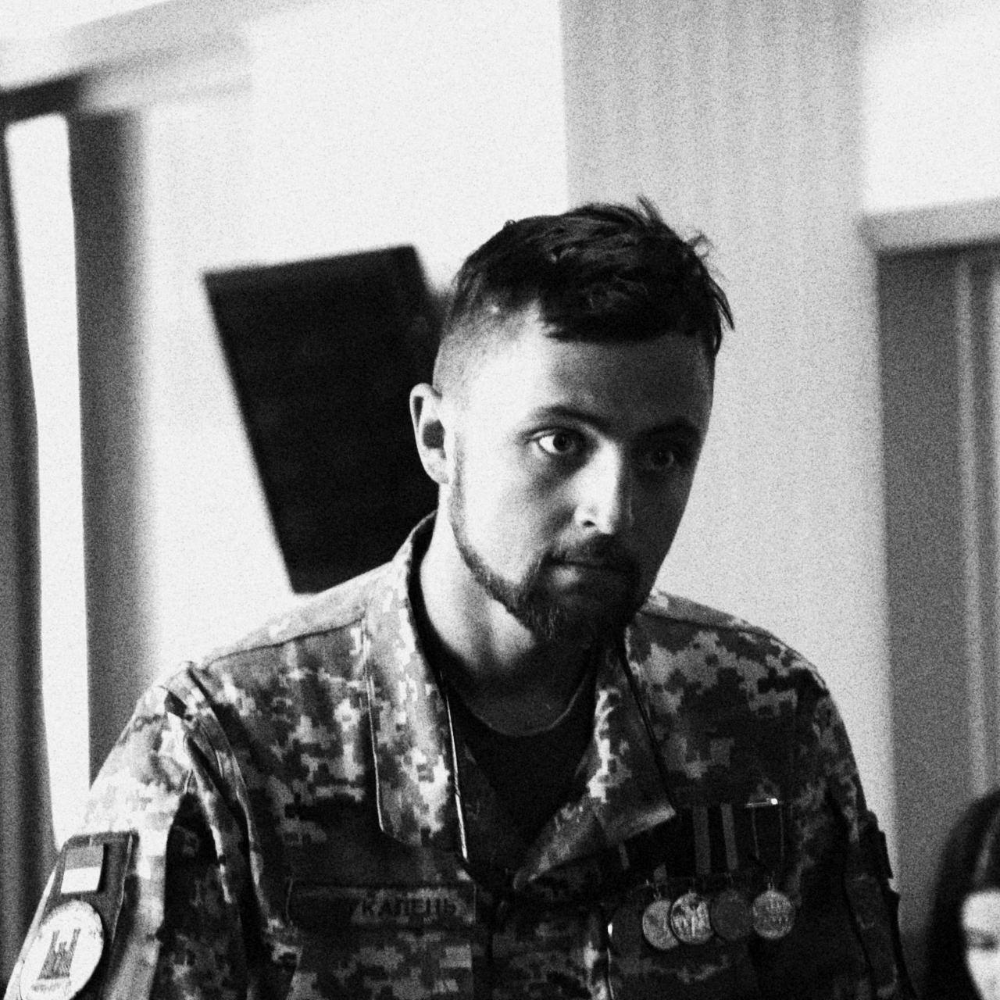

Автобіографія
Сергій Богукалець

Освіта
- 2006-2010 Бакалавр Чернігівський державний педагогічний університет
- 2011-2012 Магістр Чернігівський національний педагогічний університет
Досвід роботи
- 2010-2011; 2014-2019 - Військова служба
- 2006-2009; 2011-2013 - Чернігівська державна археологічна охоронна служба
Навички
- Креативність
- Критичне мислення
- Вирішення кризових питань
- Публічні виступи
- Досвід роботи в команді
- Комунікативність
Знання мов
- рівень CMP 2 з англійської відповідно до стандарту НАТО STANAG 6001
Контакти
e-mail : tro.chernihiv@gmail.com
Facebook
тел. + 38 093 000 00 00
Перейти до англійської версії-----> '